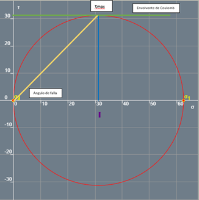

| Punto | Esfuerzo (Kpa) | Deformación | Dezplazamiento (mm) | Carga (Kn) |
|---|---|---|---|---|
| 0 | 0 | 0 | 0 | 0 |
| 1 | 2.30 | 0.003267327 | 0.055 | 0.01 |
| 2 | 4.60 | 0.010039604 | 0.169 | 0.02 |
| 3 | 6.90 | 0.014257426 | 0.24 | 0.03 |
| 4 | 9.21 | 0.037425743 | 0.63 | 0.04 |
| 5 | 11.51 | 0.053346535 | 0.898 | 0.05 |
| 6 | 13.81 | 0.055128713 | 0.928 | 0.06 |
| 7 | 16.11 | 0.067425743 | 1.135 | 0.07 |
| 8 | 18.41 | 0.079782178 | 1.343 | 0.08 |
| 9 | 16.11 | 0.081861386 | 1.378 | 0.07 |
| 10 | 18.41 | 0.083762376 | 1.41 | 0.08 |
| 11 | 20.71 | 0.068376238 | 1.151 | 0.09 |
| 12 | 23.02 | 0.096831683 | 1.63 | 0.1 |
| 13 | 25.32 | 0.114831683 | 1.933 | 0.11 |
| 14 | 29.92 | 0.134138614 | 2.258 | 0.13 |
| 15 | 32.22 | 0.141920792 | 2.389 | 0.14 |
| 16 | 34.52 | 0.144831683 | 2.438 | 0.15 |
| 17 | 36.82 | 0.164435644 | 2.768 | 0.16 |
| 18 | 41.43 | 0.186891089 | 3.146 | 0.18 |
| 19 | 46.03 | 0.197643564 | 3.327 | 0.2 |
| 20 | 48.33 | 0.207920792 | 3.5 | 0.21 |
| 21 | 50.63 | 0.218970297 | 3.686 | 0.22 |
| 22 | 52.94 | 0.22609901 | 3.806 | 0.23 |
| 23 | 55.24 | 0.235841584 | 3.97 | 0.24 |
| 24 | 62.14 | 0.281584158 | 4.74 | 0.27 |
| 25 | 50.63 | 0.391069307 | 6.583 | 0.22 |
| 26 | 48.33 | 0.405564356 | 6.827 | 0.21 |
| 27 | 46.03 | 0.412871287 | 6.95 | 0.2 |
| 28 | 43.73 | 0.423861386 | 7.135 | 0.19 |
| 29 | 41.43 | 0.429920792 | 7.237 | 0.18 |
| 30 | 59.84 | 0.346336634 | 5.83 | 0.26 |
| 31 | 62.14 | 0.293346535 | 4.938 | 0.27 |
| 32 | 59.84 | 0.300118812 | 5.052 | 0.26 |
| 33 | 62.14 | 0.304158416 | 5.12 | 0.27 |
| 34 | 64.44 | 0.316039604 | 5.32 | 0.28 |
| 35 | 62.14 | 0.324356436 | 5.46 | 0.27 |
| 36 | 55.24 | 0.359405941 | 6.05 | 0.24 |
| 37 | 52.94 | 0.374257426 | 6.3 | 0.23 |
| 38 | 59.84 | 0.255445545 | 4.3 | 0.26 |
Para realizar la curva de esfuerzo deformación tomamos el cilindro obtenido por el proceso de muestreo y antes de meterlo al horno se le realizó un ensayo a compresión. Este se basó en aplicarle, mediante a la maquina proporcionada en el laboratorio, cargas progresivas sobre una de las caras y calcular la deformación que esta causa. Este se llevó a cabo hasta que al cilindro se le comenzaran a ver fisuras lo que significa que este ha llegado a la carga de falla. Durante el laboratorio se grabó todo el proceso y se tomaron 38 datos de cargas y desplazamientos que fueron las que se lograron ver a través del video. Una vez obtenidos estos datos se encontró el esfuerzo que realiza cada carga dividiéndola por el área transversal (se considera que el área es constante ya que este cambio es muy pequeño y por lo tanto irrelevante para los resultados obtenidos.) y la deformación dividiendo el desplazamiento obtenido por la longitud inicial. Final mente con estos dos valores graficamos la curva de esfuerzo deformación. (La grafica mostrada a continuación es la línea de tendencia polinómica de los valores obtenidos.)
Como Se puede ver en la Gráfica, Este suelo cuenta con zonas elásticas, de endurecimiento y de estricción claras, pero no se le puede identificar a simple vista una zona de cedencia. También se le pueden identificar: El límite Elástico, el esfuerzo máximo y el esfuerzo de rotura.
Las curvas de esfuerzo deformación cuenta con dos Regiones principales, la primera de ellas es la zona elástica en la cual la gráfica tiende a tener un comportamiento lineal y se encuentra al principio de la gráfica. Cuando un material está situado en esta zona una vez se halla retirado la carga este tiende a recuperar completamente su geometría y no mantiene una deformación permanente. Una vez se pase de la Región Elástica a la segunda Región, La Región Plástica el material después de que se descargue se devolverá paralelo a la linealidad de la Región elástica causando que este finalicé con una deformación que depende solo de en qué punto de la Región Plástica se encontraba y de la pendiente de la Región elástica. La Región Plástica, en el caso de esta gráfica, se divide en dos zonas, la primera es la zona de endurecimiento, en la que como en la Región Elástica para generar una deformación se deberá aumentar el esfuerzo, Por el contrario, en la zona de estricción, que es la que ve justo antes del punto de falla, para aumentar la deformación se necesita un esfuerzo menor al anterior, por lo tanto, como lo dice su nombre en esta zona el suelo se vuelve cada vez más dúctil.
El límite Elástico (σy) es el punto en el cual, en material, en este caso un suelo, pasa de tener un comportamiento elástico a uno Plásticos. El esfuerzo Máximo o Ultimo (σu) Es el esfuerzo máximo que el material puede soportar antes de fracturarse permanentemente. El esfuerzo de fractura o rotura (σr) es el esfuerzo con el cual el material ya no puede seguir deformándose y por lo tanto se fractura inevitablemente.
| Esfuerzos Principales | |||
|---|---|---|---|
| σy (KPa) | 52.1540186 | ey | 0.223 |
| σu (KPa) | 62.3993741 | eu | 0.303 |
| σr (KPa) | 42.4204568 | er | 0.43 |
Con los resultados obtenidos anteriormente se pueden encontrar ciertas propiedades del suelo y las que se estudiarán en este trabajo serán: El Módulo de Young, La resiliencia y la tenacidad. El Módulo de Young (E), también llamado módulo de elasticidad es la relación entre el esfuerzo y la deformación en la zona elástica de un material. Ya que esta zona tiende a ser lineal este módulo es la pendiente de esta línea. Este módulo nos puede llevar a saber que tan elástico o rígido es un material, entre mayor sea más rígido es el material y entre menor sea el material es más elástico. Como esta grafica comienza en (0,0) se puede decir que E es igual a σy/ey.
| Propiedades Mecanicas | ||
|---|---|---|
| E | 233.874523 | Kpa |
| Resiliencia Integral | 5.80207 | KJ |
| Resiliencia Triangulo | 5.81517 | KJ |
| Dif de resiliencia | -0.0131 | KJ |
| Tenacidad | 17.4275 | KJ |
La Resiliencia es La energía elástica Potencial Máxima que tiene un material, En otras palabras, es la capacidad de recuperar su posición inicial después de ser deformada. Si un material necesita más energía que la resiliencia para volver a su punto inicial (está en la zona Plástica), este va a quedar con cierta deformación. Esta resiliencia se puede encontrar como el Área debajo de la Parte elástica de la curva esfuerzo deformación. En el caso del suelo analizado la resiliencia se puede encontrar por dos métodos, El primero es integrar la ecuación obtenida con Excel hasta el ey y la segunda es asumir que la zona elástica es totalmente recta y calcular el Área como un triángulo rectángulo. Para comparar ambas posibilidades se encontrará la resiliencia por ambos métodos y se compararán. La Tenacidad por otro lado es la energía total que puede absorber un material antes de fracturarse o fallar, Para encontrar la tenacidad de nuestro suelo se le calculará la integral a la ecuación de la línea de tendencia hasta el er.
En la siguiente tabla se puede ver como varia la relación de esbeltez durante el ensayo RCNC (resistencia a la compresión no confinada) cabe aclarar que estos resultados pueden variar con respecto a los resultados ya que en estos cálculos no se calculó el aumento del radio del cilindro y por lo tanto este se mantuvo constante en todos los análisis, Los resultados verdaderos serán un poco menores para la esbeltez en el punto de fluencia , punto de esfuerzo máximo y de rotura.
| Relacion de esbeltez | |
|---|---|
| Inicial | 2.26320156 |
| Punto de Fluencia | 2.21273216 |
| Punto de Esf maximo | 2.19462655 |
| Punto de Rotura | 2.16588389 |
| cambio | -0.09731767 |
| Cambio Porcentual | -4.30% |
Estos cambios de esbeltes se deberán tener en cuenta si se va a apoyar una estructura sobre este suelo ya que estos también podrían influir en que se produzca una falla en el suelo.
El circulo de Mohr es una forma De graficar los esfuerzos axiales y cortantes en una división cuadrada del sistema analizado, En este círculo se puede ver como dependiendo del Angulo de la división los esfuerzos cambian y como se relacionan unos con otros. Para este suelo se le va a realizar el circulo de Mohr al esfuerzo último, ya que es el que no se podrá superar cuando estemos construyendo sobre este suelo.
Para graficar el Circulo De Mohr se deben tener en cuenta y encontrar ciertos valores, lo primero es que el área que se analizará tiene una dirección en el eje del cilindro mientras la otra está en la dirección radial. Luego se estudiarán cuáles son los esfuerzos que afectan esta área. Como el único esfuerzo que tenemos es perpendicular a uno de los lados de las aristas entonces solo se tendría ese esfuerzo de compresión causando que el esfuerzo Cortante, El esfuerzo en el otro sentido, y por ende el Angulo, son 0 Con estos datos Podemos encontrar que el Radio del círculo de Mohr es igual al promedio de los esfuerzos Axiales.
| Valores Iniciales | Para τmax | |
|---|---|---|
| σ1 KPa | 62.4 | 31.2 |
| σ2 KPa | 0 | 31.2 |
| Τ KPa | 0 | 31.2 |
| ϴ ° | 0 | 45 |
| Σavg KPa | 31.2 | |
| Radio | 31.2 |
En el Circulo De Mohr se obtuvo que si inclinamos el área 45° (ósea 90° en el círculo de Mohr) obtenemos que el cortante máximo el cual corresponde a 31.2 KPa y que con esta inclinación también existirán unos esfuerzos Axiales por ambos ejes (x´ y y´) de 31.2 KPa. (Tener en cuenta que los esfuerzos axiales positivos están siendo considerados a Compresión.) Esto nos indicaría que si vamos a utilizar este suelo las dos áreas o planos que más se deben tener en cuenta son estos dos y más si se van a utilizar a compresión simple como lo hace el ensayo realizado y explicado anteriormente.
Al ser un ensayo RCNC con una sola muestra, para trazar la envolvente de coulomb se debe asumir el Angulo de fricción (Ø) igual a 0, esto implicaría que la cohesión (C) sea igual al radio o a él cortante máximo (C=31.2kPa). Esto nos resultaría en que el ángulo de falla seria de 45°, el Angulo en el cual se encuentra el cortante máximo.
Tipo de falla:
Las fallas que se vieron después de realizar el ensayo RCNC fueron paralelas al eje del cilindro y a medida que bajaban por el cilindro se iban dividiendo, generando mas fallas y grietas. Esta falla podría ser una falla tipo 3 o tipo B, según la caracterización que se utilice.
Fuentes: -Reciclaje de residuos industriales
-Revista Técnica de la Facultad de Ingeniería Universidad del Zulia
Estas fallas se pudieron ocasionar debido a tensiones tangenciales ocasionadas por el ancha miento radial ocasionado por la carga a la compresión, probablemente en un ensayó confinado, triaxial o incluso cuando estaba todavía enterrado la falla no tienda a tener esta forma ya que la tensión de las fibras será contrarrestada con el confinamiento o con el esfuerzo 3.
Reciclaje de residuos industriales (Carvajal, Sánchez, Gómez y Muñóz, 2012)
Revista Técnica de la Facultad de Ingeniería Universidad del Zulia (Salazar, Quintero y Fonthal, 2016)